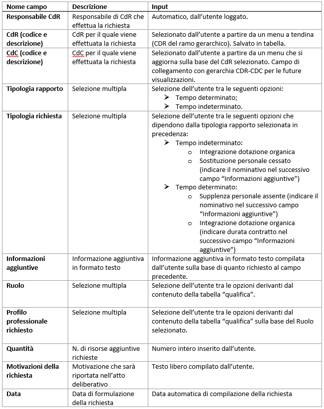

Man Tecnico:Risorse umane
Analisi dei requisiti
Il Responsabile di CdR ad inizio anno di budget, al fine di perseguire degli obiettivi strategici assegnati, sostenere le prospettive di evoluzione del proprio CdR e per far fronte al turn-over del personale garantendo la continuità operativa all’interno della UO, esplicita il fabbisogno di risorse aggiuntive ed in particolare di risorse umane, in sostituzione o in incremento, per il proprio CdR.
La discussione di budget con la Direzione Strategica, elemento essenziale del processo di programmazione e controllo, si concretizza in tal modo in una valutazione congiunta dei livelli di performance attesi dal CdR e delle risorse ad esso attribuite per il relativo raggiungimento.
La presente analisi è relativa unicamente alla componente delle risorse umane ma gli aspetti teorici e di metodo trattati sono generalizzabili per tutte le tipologie di risorse impiegate all’interno dei processi aziendali.
Il Responsabile di CdR, a partire da una ricognizione del personale del proprio CdR, effettua un’analisi dei fabbisogni complessivi necessari per garantire il raggiungimento della performance attesa ed esplicita all’interno di un apposito modulo “Risorse Umane” le eventuali richieste di personale aggiuntivo motivando per singola richiesta e complessivamente per CdR le ragioni ed i criteri a supporto.
Il processo di raccolta dei fabbisogni e negoziazione delle richieste avviene bottom-up a partire dai CdR di livello più basso della gerarchia (UOS) può essere sintetizzato come segue:
- Raccolta delle richieste dal CdR di livello più basso (UOS) fino al primo CdR di Programmazione Strategica di livello gerarchico superiore;
- Validazione di tutte le richieste anche da parte dei livelli intermedi; a fronte di una richiesta non ancora valutata e validata dai CdR intermedi, il CdR di Programmazione Strategica di livello gerarchico superiore visualizza la richiesta in stato “in attesa di parere da parte del CdR “figlio” “;
- Il CdR di Programmazione Strategica inserisce le proprie richieste, valuta e approva o meno quelle provenienti dai CdR di livello inferiore e valida il complesso delle richieste di tutto il proprio ramo gerarchico con una nota a supporto delle richieste confermate/formulate;
- Ciascun livello evade le richieste complessive inserendo una relazione sintetica di motivazione del complesso di richieste avanzate.
- Una volta completata la raccolta delle richieste da parte del CdR di Programmazione Strategica ed effettuata la validazione finale, le richieste vengono sottoposte alle Direzioni Strategiche di riferimento che effettua una validazione preliminare delle richieste formulate dai CdR afferenti.
- La discussione di budget tra Responsabili di CdR (Dipartimenti e UO di Staff) e Direzione Strategica è relativa sia agli obiettivi strategici ed ai livelli di performance attesi che alle risorse complessivamente assegnate al CdR per il loro raggiungimento.
- Il complesso delle risorse aggiuntive negoziate tra CdR e Direzione Strategica costituisce il budget trasversale per la UOC Risorse Umane che ad inizio anno di budget ha il quadro completo dei fabbisogni cui far fronte a livello aziendale. Analizzate le richieste e tenuto conto dei vincoli normativi ed economici il Responsabile della UOC Risorse Umane programma le azioni per l’acquisizione delle risorse aggiuntive, laddove possibile, e fornisce un riscontro alla Direzione ed ai CdR rispetto ai tempi previsti; inoltre effettua il monitoraggio periodico delle richieste evase e ne fornisce evidenza.
A supporto delle decisioni dei diversi attori che intervengono nel processo occorre fornire informazioni di sintesi e di dettaglio relativamente alla dotazione organica dei singoli CdR.
Descrizione delle funzionalità
Il processo sopra descritto può trovare attuazione mediante uno specifico modulo della piattaforma di programmazione e controllo aziendale (PP&C). Tale modulo dovrà consentire ai diversi utenti che intervengono nel processo di effettuare quanto segue:
- Responsabile di CDR:
- Richieste del CDR e di tutto il ramo gerarchico (fino al CdR strategico) approvate o ancora da valutare
- Richieste non approvate dal CdR stesso o dai CdR afferenti
- Responsabile del CDR di Programmazione Strategica:
- Richieste in fase di approvazione dal figlio
- Richieste approvate e da valutare
- Richieste non approvate dal figlio
- Direttore Strategico di Riferimento:
- Visualizza in apposita sezione le richieste raggruppate per CdR di Programmazione Strategica afferenti e le relazioni di sintesi formulate a supporto
- Approva o meno le richieste dei CdR afferenti e ne visualizza l’iter durante le fasi successive.
- Direttore Generale:
- Visualizza in apposita sezione le richieste raggruppate per CdR di Programmazione Strategica afferenti e le relazioni di sintesi formulate a supporto
- Approva o meno le richieste confermate dalle Direzioni Strategiche e formulate da tutti i CdR e ne definisce il livello di priorità
- Visualizza l’iter delle singole richieste durante le fasi successive.
- Direttore Risorse Umane:
- Esprime parere tecnico;
- Effettua il monitoraggio delle richieste rendicontandone l’acquisizione.
Il modulo della PP&C può pertanto prevedere tre schede specifiche:
- Richieste:
- Tab – Richieste del CDR: mediante la quale ogni responsabile di CdR formula le richieste per tutti i CdR del proprio ramo gerarchico, visualizza valuta e approva le richieste confermate ed effettuate dai CdR afferenti, evade il complesso delle richieste fornendo al superiore gerarchico un quadro di sintesi in apposito campo note.
- Tab – Richieste dei CDR
- In una prima parte il Responsabile visualizza le richieste formulate dai CdR afferenti ma non ancora valutate dal CdR di livello intermedio (es. Dipartimento vede richiesta di UOS non ancora valutata e approvata da UOC).
- In una seconda parte il Responsabile visualizza le richieste che sono state rifiutate dai livelli intermedi.
- Approvazione: sezione mediante la quale i Direttori Strategici di riferimento ed il Direttore Generale successivamente approvano o meno le singole richieste formulate per CdR di programmazione strategica definendone la priorità, visualizzano la relazione inserita dal Responsabile all’interno del campo note.
- Istruttoria: sezione mediante la quale il Responsabile della UOC Risorse Umane riceve tutte le richieste negoziate da CdR e Direzione Strategica, effettua la programmazione delle attività formalizzandola all’interno delle singole richieste esplicitando tempi e modi, effettua il monitoraggio periodico e fornisce il riscontro finale al momento dell’acquisizione della risorsa.
Le informazioni che dovranno comporre la singola richiesta sono quelle riportate in immagine.

Ciascun Responsabile di CdR intermedio, Responsabile di CdR di Programmazione Strategica, Direttore strategico di riferimento ed il Direttore Generale forniscono il proprio parere (parere successivo solo in caso di parere positivo del livello precedente) compilando per singola richiesta i seguenti campi:
- Parere: SI’ / NO / Altro (con campo note testuale)
- Priorità: ALTA / MEDIA / BASSA
- Tempi: 1° Semestre / 2° Semestre
- Costo presunto (€)
- Modalità di acquisizione (campo testo)
- Tempi (1° Semestre / 2° Semestre)
- Anno soddisfacimento richiesta (elenco)
- Fonte di finanziamento proposta (campo testo)
- Non coerente con il piano dei fabbisogni (con motivazioni nel campo note)
- Fatto (Sì / No)
- Importo definitivo (€)
- Data
- Provvedimento (testo)
- Fonte di finanziamento (testo)
- Note (testo)
Il Responsabile della UOC Risorse Umane (responsabile della fase istruttoria) una volta acquisito il parere della DG sarà chiamato a definire in fase di programmazione e per singola richiesta:
Una volta approvato il budget trasversale in accordo con la Direzione Strategica il Responsabile Risorse Umane compila il monitoraggio intermedio e finale relativo all’acquisizione della richiesta mediante i seguenti campi:
Nel caso di monitoraggio intermedio il Responsabile R.U. effettuerà un salvataggio tramite il tasto “salva monitoraggio intermedio”, nel caso di chiusura/soddisfacimento della richiesta effettuerà il salvataggio finale mediante il tasto “conferma acquisizione risorsa”.
Scelte implementative
Per implementare le funzionalità richieste si sceglie di creare una voce di menù "risorse umane" e sottovoci che rappresentino i vari ruoli nel processo, ognuno dei quali permetterà di raggiungere la propria pagina di competenza, suddivisa in tab che rappresentino le richiesta di competenza e quelle per le quali si debba anche avere un ruolo attivo (richieste da approvare o da completare). La gestione delle richieste avverrà tramite i componenti standard del framework ffGrid ed ffRecord.
Verrà inoltre rappresentato il report del personale in dotazione al CdR tramite un template personalizzato che permetterà la navigazione gerarchica dal CdR selezionato ai figli sul prorio ramo e per ognuno di questi verrà mostrato il dettaglio delle teste assegnate direttamente e cumulative sul ramo, suddivise per ruolo e categoria professionale. Per espletare queste funzionalità verranno precaricati tutti i dati (filtrati in base ai criteri selezionati) lato server e ne verrà gestita la visualizzazione tramite funzioni JQuery ad-hoc. Verrà così garantita la possibilità di caricare una sola volta i dati in maniera ottimizzata ed evitate richieste ajax per ogni espansione di livello / dettaglio di informazione. La selezione di criteri nei filtri forzerà un aggiornamento della pagina.
Modello ER
ru_accettazione (ID, codice_cdr, ID_anno_budget, note, data_accettazione)
ru_cdr_abilitato (ID, codice_cdr, programmazione_strategica, anno_inizio, anno_termine)
ru_dg (ID, codice_cdr, anno_inizio, anno_termine)
ru_direzione_riferimento (ID, codice_cdr, anno_inizio, anno_termine)
ru_parere (ID, descrizione, esito, anno_inizio, anno_termine)
ru_priorita (ID, descrizione, anno_inizio, anno_termine)
ru_richiesta (ID, ID_anno_budget, matricola_creazione, codice_cdr_creazione, data_creazione, codice_cdc, ID_tipo_richiesta, informazioni_aggiuntive_tipologia, ID_qualifica_interna, qta, motivazioni, data_chiusura, ID_parere_cdr_padre, note_parere_cdr_padre, ID_priorita_cdr_padre, ID_tempi_cdr_padre, data_approvazione_cdr_padre, data_rifiuto_cdr_padre, ID_parere_cdr_strategico, note_parere_cdr_strategico, ID_priorita_cdr_strategico, ID_tempi_cdr_strategico, data_approvazione_cdr_strategico, data_rifiuto_cdr_strategico, ID_parere_direzione_riferimento, note_parere_direzione_riferimento, ID_priorita_direzione_riferimento, ID_tempi_direzione_riferimento, data_approvazione_direzione_riferimento, data_rifiuto_direzione_riferimento, ID_parere_dg, note_parere_dg, ID_priorita_dg, ID_tempi_dg, data_approvazione_dg, data_rifiuto_dg, costo_presunto, modalita_acquisizione, ID_tempi_uo_competente, anno_soddisfacimento_richiesta, fonte_finanziamento_proposta, incoerenza_piano_fabbisogni, data_approvazione_uo_competente, data_rifiuto_uo_competente datetime, importo_definitivo, data_acquisizione, provvedimento, fonte_finanziamento, note_monitoraggio, data_conferma_acquisizione)
ru_tempi (ID, descrizione, anno_inizio, anno_termine)
ru_tipo_richiesta (ID, descrizione, anno_inizio, anno_termine)
ru_uo_competente (ID, codice_cdr, anno_inizio, anno_termine)
Modello Classi
class CdrRU extends Cdr
Estende le informazioni della classe "Cdr" con metodi utili alle funzionalità del modulo.
- Metodi
:*public function isCdrAbilitatoAnno (AnnoBudget $anno) ::Restituisce true se il CdR rappresentato dall'istanza della classe è abilitato per l'anno di budget passato come parametro. :*public function getCdrPadreAbilitato(AnnoBudget $anno) ::Restituisce il primo CdR padre abilitato sul proprio ramo gerarchico superiore per l'anno di budget passato come parametro. :*public function isProgrammazioneStrategicaAnno(AnnoBudget $anno) ::Restituisce true se il CdR rappresentato dall'istanza della classe è di programmazione strategica per l'anno di budget passato come parametro. :*public function getCdrProgrammazioneStrategicaAnno(AnnoBudget $anno) ::Restituisce un array di oggetti di tipo RUCdr rappresentante tutti i CdR di programmazione strategica per l'anno di budget passato come parametro. :*public function getCdrPadreProgrammazioneStrategica(AnnoBudget $anno) ::Restituisce il primo CdR padre di programmazione strategica sul proprio ramo gerarchico superiore per l'anno di budget passato come parametro. :*public function isDirezioneRiferimentoAnno(AnnoBudget $anno) ::Restituisce true se il CdR rappresentato dall'istanza della classe è direzione di riferimento per l'anno di budget passato come parametro. :*public function getCdrDirezioneRiferimento(AnnoBudget $anno) ::Restituisce un array di oggetti di tipo RUDirezioneRiferimento rappresentante tutte le direzioni di riferimento per l'anno di budget passato come parametro. :*public function getCdrDirezioneRiferimentoAnno(AnnoBudget $anno) ::Restituisce la prima direzione di riferimento sul proprio ramo gerarchico superiore per l'anno di budget passato come parametro. :*public function isDgAnno(AnnoBudget $anno) ::Restituisce true se il CdR rappresentato dall'istanza della classe è direzione generale per l'anno di budget passato come parametro. :*public function getCdrDg(AnnoBudget $anno) ::Restituisce un array di oggetti di tipo RUDg rappresentante tutte le direzioni generali per l'anno di budget passato come parametro. :*public function getCdrDgAnno(AnnoBudget $anno) ::Restituisce la prima direzione generale sul proprio ramo gerarchico superiore per l'anno di budget passato come parametro. :*public function isUOCompetenteAnno(AnnoBudget $anno) ::Restituisce true se il CdR rappresentato dall'istanza della classe è UOC competente per l'anno di budget passato come parametro. :*public function getUOCompetentiAnno(AnnoBudget $anno) ::Restituisce un array di oggetti di tipo RUUOCompetente rappresentante tutte le UOC competenti per l'anno di budget passato come parametro. :*public function getRichiesteAnno(AnnoBudget $anno) ::Restituisce un array di oggetti di tipo RURichiesta rappresentante tutte le richieste per l'anno di budget passato come parametro. :*public function getGerarchiaCompetenzaRamoCdrAnno(AnnoBudget $anno) ::Restituisce un array di oggetti di tipo Cdr rappresentante tutti i Cdr di competenza sul ramo gerarchico dell'istanza della classe, per l'anno di budget passato come parametro. :*public function getRichiesteCompetenzaRamoCdrAnno(AnnoBudget $anno) ::Restituisce un array di oggetti di tipo RURichiesta rappresentante tutte le richieste di competenza dell'istanza della classe, per l'anno di budget passato come parametro. :*public function getAccettazioneAnno(AnnoBudget $anno) ::Restituisce un oggetto di tipo RUAccettazione rappresentente l'eventuale accettazione dell'istanza della classe, per l'anno di budget passato come parametro.
class RUAccettazione extends Entity
Rappresenta un'accettazione.
- Attributi
:*protected static $tablename = "ru_accettazione";
- Metodi
:*public function save() ::Inserimento / aggiornamento del record della tabella "ru_accettazione" del DB corrispondente all'oggetto.
class RUCdrAbilitato extends Entity
Rappresenta un cdr abilitato alla richiesta di risorse umane.
- Attributi
:*protected static $tablename = "ru_cdr_abilitato";
class RUDg extends Entity
Rappresenta un cdr con il ruolo di Direzione Generale per il modulo risorse umane.
- Attributi
:*protected static $tablename = "ru_dg";
class RUDirezioneRiferimento extends Entity
Rappresenta un cdr con il ruolo di Direzione di riferimento per il modulo risorse umane.
- Attributi
:*protected static $tablename = "ru_direzione_riferimento";
class RUParere extends Entity
Rappresenta un parere esprimibile per una richiesta di risorse umane.
- Attributi
:*protected static $tablename = "ru_parere";
class RUPriorita extends Entity
Rappresenta una priorità esprimibile per una richiesta di risorse umane.
- Attributi
:*protected static $tablename = "ru_priorita";
class RURichiesta extends Entity
Rappresenta una richiesta di risorse umane.
- Attributi
:*protected static $tablename = "ru_richiesta"; public static $stati_richiesta = array(
array( "ID" => 0, "descrizione" => "Anomalia", "esito" => "ko",),
array( "ID" => 1, "descrizione" => "Richiesta in fase di compilazione", "esito" => "",),
array( "ID" => 2, "descrizione" => "Richiesta in fase di approvazione dal CdR padre", "esito" => "",),
array( "ID" => 3, "descrizione" => "Richiesta in fase di approvazione dal CdR di programmazione Strategica", "esito" => "",),
array( "ID" => 4, "descrizione" => "In attesa di approvazione dalla Direzione di riferimento", "esito" => "",),
array( "ID" => 5, "descrizione" => "In attesa di parere dalla Direzione Generale", "esito" => "",),
array( "ID" => 6, "descrizione" => "In istruttoria da parte della UO competente", "esito" => "",),
array( "ID" => 7, "descrizione" => "In fase di monitoraggio", "esito" => "",),
array( "ID" => 8, "descrizione" => "Acquisita", "esito" => "ok",),
array( "ID" => 9, "descrizione" => "Non approvato dai CdR padre", "esito" => "ko",),
array( "ID" => 10, "descrizione" => "Non approvato dal CdR strategico", "esito" => "ko",),
array( "ID" => 11, "descrizione" => "Non approvato dalla Direzione di riferimento", "esito" => "ko",),
array( "ID" => 12, "descrizione" => "Non approvato dalla Direzione Generale", "esito" => "ko",),
array( "ID" => 13, "descrizione" => "Non approvato dalla UO competente", "esito" => "ko",),);
- Metodi
:*public static function getStatiAvanzamento() ::Viene restituito un l'attributo $stati_richiesta della classe. :*public function getIdStatoAvanzamento () ::Restituisce un intero rappresentante l'indice dell'array degli stati d'avanzamento, corrispondente allo stato d'avanzamento della richiesta in base alla valorizzazione dei campi. :*public function isApprovazioneCompetenza(CdrRU $cdr, AnnoBudget $anno, Datetime $data_riferimento, PianoCdr $piano_cdr) ::Restituisce true se la richiesta istanziata è di competenza per il Cdr passato come parametro in un anno specifico, ad una data di riferimento per un piano dei cdr, passati come parametri. :*public function save() ::Viene salvato a db nella tabella "ru_richiesta" l'oggetto. Gli attributi vengono salvati come valori dei campi corrispondenti. Se il record esiste già (verifica su ID) viene aggiornato altrimenti viene aggiunto. :*public function public static function getGridRichieste($grid_id, $grid_title, $grid_recordset, $include_fullclick=null) ::Restituisce un oggetto ffGrid di ID e titolo passati come parametro, con l'elenco delle richieste passate dall'array recordset e con la possibilià di includere o meno la funzione js fullclick() (per la gestione delle grid nei tab). :*function getUltimaAccettazioneData(DateTime $data_riferimento, CdrRU $cdr = null) ::Restituisce un oggetto di tipo RUAccettazione rappresentante l'ultima accettazione definita per la richiesta rappresentata dall'istanza nell'oggetto, per un anno specifico passato come parametro. Se viene passato come parametro $cdr allora viene considerata l'ultima accettazione precedente all'eventuale eccettazione del CdR passato.
class RUTempi extends Entity
Rappresenta una tempistica esprimibile per una richiesta di risorse umane.
- Attributi
:*protected static $tablename = "ru_tempi";
class RUTipoRichiesta extends Entity
Rappresenta una tipologia di richiesta di risorse umane.
- Attributi
:*protected static $tablename = "ru_tipo_richiesta";
class RUUOCompetente extends Entity
Rappresenta un cdr con il ruolo di UOC competente per il modulo risorse umane.
- Attributi
:*protected static $tablename = "ru_uo_competente";